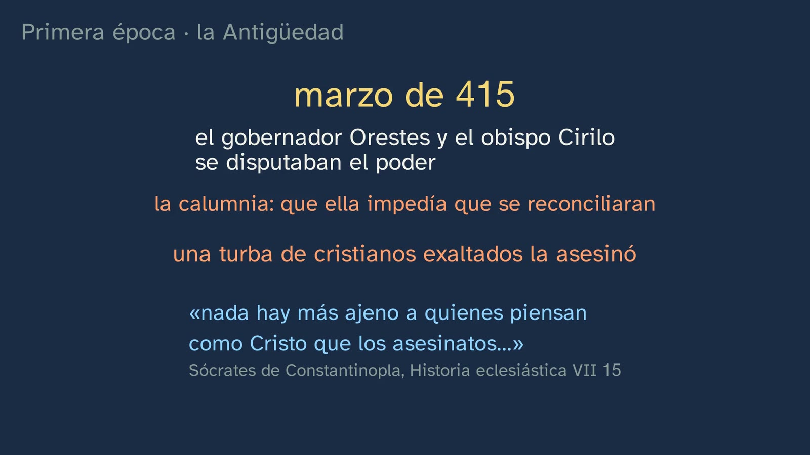
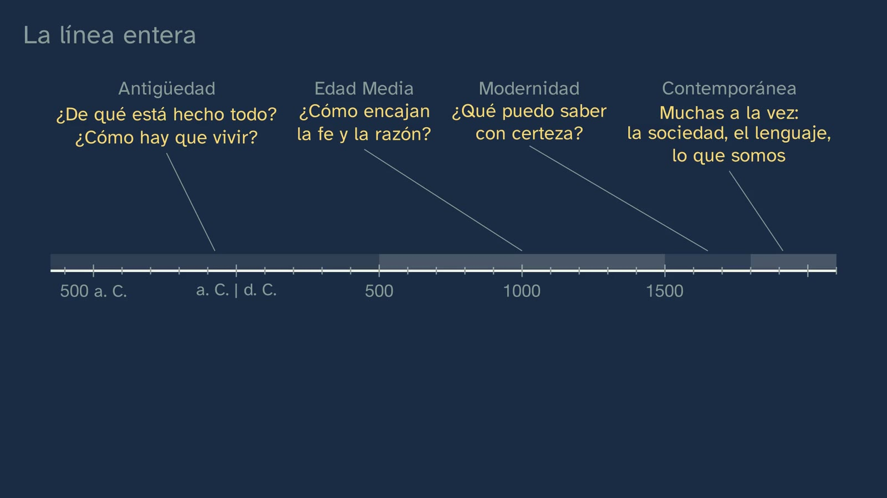

Twenty-five centuries of philosophy
In a nutshell
The class places philosophy in time. It starts by setting the seven philosophers from the table in class 2 on a timeline to scale, from Thales (around 600 BC) to today: that's more than twenty-five centuries. And two gaps appear. The first leaps out: between Aristotle and Thomas Aquinas lie more than fifteen hundred years, more than half the line, empty. The second is less visible: six men, one woman, and all seven European. The class travels the whole line, era by era, with the question that drove each one most, and fills the gaps:
- How it was born: in Miletus, from Hesiod's myths to asking what everything is made of (the arche); and why there, according to Jean-Pierre Vernant's interpretation: the polis, the square and the laws in plain view of all. Then the typical mistake, taken apart: it was not a «Greek miracle».
- Antiquity: what everything is made of and, with Socrates, how one should live; the schools, and the first women philosophers, in the margins: Lastheneia, Axiothea and Hipparchia.
- Hypatia: what we know from her fullest source, and what was added to her in 1908.
- The Middle Ages: how faith and reason fit together, the question of Christians, Muslims and Jews; the two roads by which Aristotle's works reached Latin Europe; Hildegard of Bingen and Christine de Pizan.
- Modernity: what I can know for certain; Descartes, Zhuangzi and the butterfly, the objection of Elisabeth of Bohemia, Sor Juana, Kant and Mary Wollstonecraft.
- Contemporary philosophy: many questions at once, and many women philosophers.
It closes with why women philosophers hardly appeared in the history that's usually told, with the other traditions, whose lines sometimes cross ours, and with the class's answer: four eras with their question, a map that simplifies, and a conversation more than twenty-five centuries long that is still going on.
Aim. By the end, students will be able to place the great stages of Western philosophy on a timeline, with the question that drove each one and with the women history left in the margins, and to recognise that other traditions also did philosophy.
It's a quick look to get one's bearings, not a history course: in year 1 the decree wants «a basic, overall view» of philosophy, and the history is studied slowly in year 2, in History of Philosophy. For Castile and León, this sheet also traces the persecutions of philosophy, which its regional curriculum asks for.
Curriculum
Royal Decree 243/2022, Philosophy (consolidated text in the BOE, checked on 09/10/2026; its latest update, of 02/07/2026, does not affect this subject). The knowledge is from block A, «Philosophy and the human being», section 1, «Philosophical reflection on philosophy itself».
| Element | What the decree says | Where it is worked on |
|---|---|---|
| Basic knowledge (block A.1) | «[…] A brief historical survey of philosophy. […]» | The whole class: the line to scale, the four eras with their question and the conversation that goes on |
| Basic knowledge (block A.1) | «The philosopher's basic methods and tools: the use and critical analysis of sources; […]» | No complete book by the Milesians has come down to us: we know them through others. Hypatia, through her fullest source, against what was added to her in 1908. And the tool from class 1: who tells it, when, and what for? |
| Basic knowledge (block A.1) | «Social, gender, ethnic and age discrimination in the philosophical tradition.» | The women philosophers in the margins and why they hardly appeared (Cornaro, the Royal Order of 1910); Hipparchia, between what was expected of a Greek girl and what she chose; one Western line among others. In depth, in class 6 |
| Specific competence 2 | «To search for, manage, interpret, produce and correctly convey information on philosophical questions through the cross-checked and safe use of sources, their rigorous use and analysis, and the use of elementary research and communication procedures […]» | Hypatia and Hubbard, examined as sources; exercise 3; the activity |
| Specific competence 5 | «To recognise the plural character of the conceptions, ideas and arguments around each of the fundamental problems of philosophy, through the critical analysis of various relevant theses on them, to generate a complex and non-dogmatic conception of those questions and ideas […]» | Vernant and those who qualify him; the Axial Age, as a disputed hypothesis; the formula «from mythos to logos», properly understood |
| Specific competence 6 | «To understand the main philosophical ideas and theories of the most important thinkers, men and women, through the critical and dialectical examination of them and of the fundamental problems they respond to […]» | Each era, with its question, its men and women philosophers, and what each of them said in their own words |
| Criterion 2.1 | «To demonstrate a practical knowledge of the elementary procedures of philosophical research through tasks such as identifying reliable sources, searching for information efficiently and safely, and correctly organising, analysing, interpreting, evaluating, producing and communicating it […]» | Where does Hypatia's quote come from? (11:32); exercise 3 («in a reliable source»); the five-sources activity |
| Criterion 3.3 | «To recognise the importance of cooperation, commitment to the truth, respect for plurality and the rejection of any discriminatory or arbitrary attitude, applying these principles to argumentative practice and to dialogue with others.» | Theodorus, who doesn't answer Hipparchia's argument and reminds her of the place that, in his view, belonged to a woman; the closed universities; the open question: who are we leaving in the margins today? |
| Criterion 5.2 | «To understand and present different philosophical theses and theories as moments of a dynamic and always open process of reflection and dialogue, through the comparative analysis of the arguments, principles, methodologies and approaches of those theses and theories.» | The Milesians, who don't repeat their teacher; the conversation: Thomas with Aristotle, Descartes with the philosophy taught in the schools of his day, Elisabeth with Descartes |
| Criterion 6.1 | «To become aware of the richness and influence of philosophical thought by identifying and analysing the main philosophical ideas and theories in texts or documents from diverse cultural spheres […]» | Confucius, the Buddha and Zhuangzi; al-Kindi, Avicenna, Averroes and Maimonides; Baghdad, Córdoba and Toledo: the lines that cross |
| Criterion 6.2 | «To acquire and demonstrate a meaningful knowledge of the philosophical ideas and theories of some of the most important thinkers, men and women, in history […]» | The men and women of each era, with their dates and their words; exercise 3 |
A reading detail: in the decree, «A brief historical survey of philosophy» shares a bullet point with the features of philosophical knowledge, its divisions and its usefulness. This class works only on the survey; the rest is in classes 1, 2, 4 and 7 of the topic.
The depth of year 1. The subject's knowledge aims «to give students a basic, overall view of the rich and complex field of study that philosophy comprises», and in each case «some may be explored in more depth than others» (introduction to the subject). That's why the class is a map to get one's bearings. The decree also asks to make up for «the historical marginalisation and concealment of women, or the cultural prejudices of an ethnocentric, racist or anthropocentric kind» that «may have weighed down the development of the discipline until recent times» (introduction): hence the margins band and the other traditions. The history is studied slowly in year 2, in History of Philosophy, with its knowledge in three blocks, not four eras: the origin in Greek antiquity; European modernity from its medieval roots; and from modern thought to «our own day» (introduction to that subject). Its competence 3 asks students to recognise «the often hidden and marginalised role of women, as well as the importance and influence of other traditions of thought different from our own». This class sows the seed.
What students need to bring. From classes 1 and 2: the four features of philosophy (critical, radical, rational and of the whole), Thales and the tool «who tells it, when, and what for?», Socrates and the examined life, the seven at the table with their answers, and the window outside Europe (Confucius, the Buddha and al-Kindi). From lower secondary (ESO), Geography and History in years 1 and 2 (Royal Decree 217/2022): «Historical time: building and interpreting timelines through linearity, chronology, simultaneity and duration»; «The people made invisible in history: women, slaves and foreigners»; and «The influence of the Jewish and Islamic civilisations on European culture».
What the regions add (contrast only, read in their official gazettes):
| Region and regulation | What it adds | Where the class covers it |
|---|---|---|
| Andalusia · Order of 30 May 2023, BOJA no. 104, 02/06/2023 | «The circumstances in which Philosophy appeared: the step from mythos to logos», in the same bullet as the brief historical survey | «How philosophy was born» (3:28) and «A Greek miracle?» (5:56): first how it was born, then the formula with its honest use, «a slow step, that didn't erase myth» |
| Madrid · Decree 64/2022, BOCM no. 176, 26/07/2022 | «The circumstances in which philosophy appeared: the step from mythos to logos. A brief historical survey of philosophy» | The same |
| Castile and León · Decree 40/2022, BOCYL no. 190, 30/09/2022, p. 49838 | «The civic origin of philosophy: philosophical debate as a precursor of critical culture. The persecutions of philosophy», also next to the brief historical survey | The civic origin, with Vernant (5:10): the square, the laws in plain view, winning by convincing with reasons, and those who qualify it. The persecutions, in the next section |
| Galicia · Decree 157/2022 | «A brief synthesis of the great historical eras»; «Philosophy and Eurocentrism» (in Galician in the original) | The four eras; the other traditions (20:34) |
| Catalonia · Decree 171/2022 | A tradition that is «androcentric and ethnocentric» (competence 4, in Catalan in the original) | The margins and the other lines |
| Valencian Community · Decree 108/2022 | «ethnocentrism, cultural relativism and decolonisation»; «Feminism, feminisms and the gender perspective in philosophy»; the ideas «silenced, relegated or hidden» (specific competence 7) | The margins (19:20) and the other lines |
Where the textbooks cover it. Of the twelve Spanish textbook projects we compared, with their unit 1 at hand, ten include a brief history of philosophy, and nine, the birth of philosophy as the step from mythos to logos. Women appear in timelines (Santillana, McGraw Hill and Casals «Radix»), in a margin (Casals, 2022) or with one author (Aspasia in Vicens Vives; Beauvoir in Editex); the other traditions and Eurocentrism, in SM, Santillana and Radix, and in Oxford through the title of a section.
The persecutions of philosophy, for Castile and León
Castile and León's curriculum puts «The persecutions of philosophy» in the same item as the brief historical survey; the national decree doesn't ask for it, and none of the twelve textbooks we compared includes it. The class doesn't give it a section of its own: a quick list of persecuted thinkers would require checking every case, and would mean rushing it. The topic tells two cases, each with its source, and both help to ask whether it really was philosophy that was persecuted, or something else.
| Case | Where it is in the video | What the sources say | For doing philosophy? |
|---|---|---|---|
| Socrates, sentenced to death in Athens in 399 BC | Class 1, chapter «What philosophy does»: «at his trial, when he had already been found guilty», he said that an unexamined life is not worth living (Apology 38a). Class 2, chapter «Socrates: examining life»: the city's gadfly (Apology 30e), said at the same trial | The charge: not recognising the city's gods, introducing other new divinities and corrupting the young; the penalty sought, death. Diogenes Laertius copies it (II 40), saying, on Favorinus' authority, that the record was still preserved; the same charge appears in Plato (Apology 24b–c). He was condemned and drank the hemlock (Diogenes Laertius II 42) | In Plato's account, Socrates himself says that his way of examining others earned him «many enmities», and from them «many slanders» (Apology 22e–23a). The formal charge speaks of gods and of the young, not of philosophy. A good question for the classroom: did they condemn the philosopher, or what he did? |
| Hypatia, murdered in Alexandria in March 415 | This class, chapter «Hypatia: what we know and what is told» (10:17; her death, at 10:59) | Her fullest source, Socrates of Constantinople (Ecclesiastical History VII 15; his work goes up to the year 439): the prefect Orestes and the bishop Cyril were rivals for power; since she often met with Orestes, a slander spread that she was keeping them from making peace; some hot-headed men, led by a certain Peter, a reader, murdered her; and the historian, a Christian, condemns it | No, according to her source: a political struggle and a slander, not her philosophy. Other sources, later or from one side, give other causes: this sheet's activity sets them side by side |
| The year 529, to go further | Not in the video | According to the chronicler John Malalas, the only direct source, the emperor Justinian sent an order to Athens that nobody should teach philosophy (Chronographia XVIII 47). Shortly afterwards, Agathias tells (Histories II 30), seven philosophers, Damascius among them, left for Persia, because they did not like the prevailing belief and the laws kept them from living there in safety; Agathias does not explicitly link this to the order. They came back with the peace of 532 between Romans and Persians (Agathias II 30–31, according to Watts, 2005) | It is the closest thing to a ban on teaching philosophy, with two caveats: it was not «the closing of Plato's Academy», but of a Neoplatonic school that claimed to be its heir; and philosophy went on, for example in Alexandria, where Olympiodorus taught until the 560s (Watts, 2004 and 2005) |
To work on it, two questions with the sources in front of you: was Socrates condemned for doing philosophy? Was Hypatia killed for being a philosopher? This sheet's activity does the second. Both link to the other addition in that same item, «the civic origin of philosophy», which the class covers with Vernant (5:10).

How the class is built
Video chapters
About twenty-two minutes, in thirteen chapters. The thread is the timeline to scale, because the fifteen-century gap has to be seen as it is, not just told: between Aristotle's death (322 BC) and Thomas's birth (around 1225) there are 1546 years, 59 % of the 2610 from Thales to today. The philosophers go above the line; below it, in a grey band labelled «los márgenes» (the margins), the women philosophers, who at the end move up onto the line. The decree asks for teaching that is «largely dialogical», not «a mere programmatic exposition of topics and questions» (introduction to the subject): that's why the class doesn't recite a list of authors, but poses a problem (the gaps) and solves it era by era.
| Chapter | What happens | Why |
|---|---|---|
| What we'll see (0:00) | Javier says hello; the topic map, the same as in classes 1 and 2, with today's class highlighted. Hook: «the history that's usually told has huge gaps. What's hiding in them?» | Knowing where you are, and building the expectation of the gaps. |
| Solutions to the previous class (0:29) | All three, briefly: Aristotle and Marx; the four pieces of the eighth chair; and an answer from home that lacks being rational. | Spaced practice, without dragging it out. |
| Seven philosophers on a line (1:32) | Retrieval: putting the seven from the table in order. The line, from Thales to today. Prediction: where will the gaps be? The seven, in their place; the gap of more than fifteen hundred years, and the other one: six men and one woman, all European. The four strips of the eras, with their names (Antiquity, the Middle Ages, Modernity and the contemporary era), and the margins band. | What students already know, placed to scale, poses the class's question without stating it. |
| How philosophy was born (3:28) | Miletus, around 600 BC. The myth: Hesiod, around 700 BC, says that first of all came Chaos, a chasm, and then Earth (Theogony 116–117). The change of question: what everything is made of, the arche. Thales, water; Anaximander, the indefinite; Anaximenes, air: they don't repeat their teacher, and that's the critical feature. How do we know? Through others, like Aristotle. Stop and think: why in a Greek city? Vernant's answer and its nuance. | First, what is told gets told: if the class only criticised it, nobody would know what was being criticised. It's what Andalusia, Madrid and Castile and León ask for. |
| A Greek miracle? (5:56) | The typical mistake and the formula «from mythos to logos». Three things: myth didn't disappear all at once; it didn't happen only in Greece (Confucius, the Buddha; Jaspers' Axial Age, a disputed hypothesis); and it didn't come out of nothing: the Greeks themselves said that mathematics was born in Egypt, where the priests were allowed free time (Aristotle, Metaphysics I 1), and tradition says that Thales learned geometry there. Conclusion: a change, little by little, with its causes; the formula works if it's understood as a slow step that didn't erase myth. | The mistake, with what it has of truth («something did change»), taken apart with three reasons from philosophy and history, each with its source. |
| Antiquity (7:52) | Two questions: what everything is made of and, with Socrates, how one should live (Republic I 352d). The Academy and the Lyceum; Lastheneia and Axiothea (Diogenes Laertius III 46). The schools of Epicurus and of Zeno of Citium, Epicureans and Stoics: how to live in order to be happy (Epictetus, Enchiridion 1). And in Epicurus' time, among the Cynics, Hipparchia: what was expected of a Greek girl (that her father marry her off; her place, the house and the loom) and what she chose (Crates, against her parents' plea; his same cloak; the banquets, where in Athens married women didn't go). At a banquet, Theodorus doesn't answer her argument: he tries to humiliate her by lifting her cloak and throws the loom in her face, and she answers «about myself» (Diogenes Laertius VI 96–98). And the question, with no verdict: was she free, or could she only live like that beside a philosopher? All next to a Roman fresco from the Villa Farnesina usually identified as Crates and Hipparchia, which the board presents as imagined. | Each era with its question, and its women philosophers in view, in the margins band. With Hipparchia, not just the anecdote: the role she was given, the one she chose, and the debate. |
| Hypatia: what we know and what is told (10:17) | Alexandria, around AD 400: no book of hers. What her fullest source, Socrates of Constantinople, tells some twenty-five years later: she taught anyone who wanted to hear her, and she was killed in March 415 in a power struggle, following a slander; the historian, a Christian, condemns it. What was added to her: the quote that goes around, examined with the tool from class 1 (the board shows the page of the 1908 booklet and underlines «said Theon to Hypatia»: her father, Theon, says it), and the portrait, imagined, from the same booklet. And Augustine, in a dialogue with Reason he had written years earlier, in Italy: «I desire to know God and the soul». | The «how do we know?» with a woman philosopher from the gap. Giving the cause the source gives keeps the legend from filling the gap. |
| The Middle Ages and Aristotle's works (12:57) | Around 500; the question: how faith and reason fit together. Prediction: how did the rest of Aristotle reach Latin Europe? Two roads, on a map that reaches Persia: through Baghdad (with al-Kindi; and Avicenna, in Persia), al-Andalus and Toledo, from Greek into Arabic and from Arabic into Latin; and directly from Greek into Latin. Thomas read him almost always translated from Greek, with Averroes' commentaries. Stop and think: why the same question in three religions? Hildegard and Christine de Pizan. The gap, filled. Javier, to camera (15:50): there weren't fifteen empty centuries. | A prediction answered on a map, consistent with class 2, which took apart «Thomas knew Aristotle through the Arabs». |
| Modernity (15:56) | From the 16th century everything is shaking (Copernicus, the wars of religion, the printing press that fills Europe with books): what can I know for certain? Descartes and his doubt (1637); Zhuangzi and the butterfly; Elisabeth of Bohemia's objection (1643), with her reason; Sor Juana (1691); the Enlightenment: Kant (1784), with Horace's motto, and Wollstonecraft (1792), with her portrait. | The era's question, with its context and with an objection: the conversation is seen live. |
| Contemporary philosophy (18:19) | From the 19th century, many questions at once: society (Marx), language (Wittgenstein) and what we are (Beauvoir); the women philosophers of the 20th century and the trolley problem, told as Philippa Foot posed it (1967): a runaway trolley is heading towards five people, and the driver can only switch it onto another track, where there is one. | Briefly: the fourth era doesn't have a single question, and the class says so. |
| Voices from the margins (19:20) | Stop and think: why did women philosophers hardly appear? The closed universities (Elena Cornaro, Padua, 1678; Spain, Royal Order of 1910), works unsigned or lost, who decides who gets quoted; what the decree asks. The other traditions, on lines that cross. | The reasons why, with documents, not just with names. |
| The whole line (20:58) | The four eras with their question; a simplification and a convention; a conversation that is still going on: Thomas with Aristotle, Descartes with the philosophy taught in the schools of his day, heir to the Middle Ages, and Elisabeth with Descartes. | The answer to the class's question, with its warning: a map is not the territory. |
| Practice and keep thinking (21:59) | Three exercises, the open question and the next class, the branches. Javier: «philosophy is a conversation more than twenty-five centuries long, with more voices than we were told about». | The solutions open class 4. |
The class names seventeen women philosophers and twenty-five men philosophers. For four of the women, Lastheneia, Axiothea, Hipparchia and Hypatia, no work survives: what we know is a testimony, and the class presents it that way («what we know, others tell us»).

A plan for a 50-minute lesson
| Minutes | What happens |
|---|---|
| 0–3 | No video: «Before you start», on the worksheet. The women philosophers they know, and what they think happened between Aristotle and Thomas Aquinas. |
| 3–13 | Video from 0:00 to 7:52, to the end of «A Greek miracle?». Stop at 2:12 (where will the gaps be?) and at 5:05 (why in a Greek city?): one minute in pairs each time, before going on. |
| 13–18 | Video from 7:52 to 12:04: Antiquity, Hypatia and Augustine. Stop at 11:02: where does the quote come from? |
| 18–35 | The activity: why was Hypatia killed? Five sources. |
| 35–47 | Video from 12:57 to the end (23:29). Stop at 19:32 (why did women philosophers hardly appear?) and link it to the activity: who was telling Hypatia's story, and the others'? |
| 47–50 | «At the end of the class», on the worksheet: reread the two answers from the start. The exercises, for homework. In Castile and León, the question about Socrates (above) can close the lesson or open the next one. |
Typical mistakes and how they are handled
These are frequent confusions the design anticipates; as far as we know, there is no didactic research on them as solid as there is in the sciences.
- «Philosophy was born all at once in Greece, when reason replaced myth: a Greek miracle.» This is the class's mistake (5:56). It has some truth: something changed in Miletus, from telling which god was born from which to looking in nature for the principle of everything. But myth didn't disappear all at once: according to Aristotle, Thales thought that «everything is full of gods» (On the Soul I 5, 411a7–8), and Plato tells myths and even warns, in the Gorgias, that the person he is talking to will take for a myth what he himself holds to be a logos (523a). It didn't happen only in Greece: Confucius, the Buddha and Jaspers' «Axial Age» (1949), a hypothesis weakened by a study with data from many societies, which finds those features centuries or millennia earlier and in other places (Mullins and others, 2018). And it didn't come out of nothing: the Greeks themselves said that mathematics was born first in Egypt, because «there the priestly caste was allowed free time» (Aristotle, Metaphysics I 1, 981b 23–25), and a late tradition says that Thales learned geometry from the Egyptians (Diogenes Laertius I 24 and 27; Proclus). Vernant himself said it in 1957: those innovations «do not constitute a miracle»; «there is no immaculate conception of Reason» (p. 205). To those who have to teach «the step from mythos to logos» (Andalusia and Madrid), the class gives its honest use: a slow step, that didn't erase myth.
- «The Middle Ages were a dark time: a thousand years without philosophy.» The line of the seven suggests it, and the class asks it aloud (2:46: «did nobody think anything in fifteen centuries?») to answer it with names (15:40): Epicurus, Epictetus, Hypatia, Augustine, al-Kindi, Avicenna, Averroes, Maimonides, Hildegard… In Greek, Latin, Arabic and Hebrew: Marenbon distinguishes four branches of medieval philosophy, Greek, Latin, Arabic and Jewish. The gap belonged to the history that's usually told, not to philosophy.
- «Thomas Aquinas knew Aristotle thanks to the Arabs.» Class 2 already took this apart, and this one shows it on a map (14:13). There were two roads. One, through Baghdad (8th–10th centuries, into Arabic, sometimes via Syriac first), al-Andalus and Toledo (12th century, from Arabic into Latin). The other, direct from Greek into Latin: James of Venice, in the 12th century, and William of Moerbeke, Thomas's contemporary, with manuscripts from the Byzantine world. Thomas read Aristotle almost always in those translations from Greek and used the commentaries of Averroes, whom he called «the Commentator». For the Metaphysics he started by also using the Arabic-Latin version, and from mid-1271 Moerbeke's (Borgo, 2024). Two neighbouring legends: that Thomas commissioned the translations from Moerbeke («most probably nothing more than a legend originating in hagiography», in Minio-Paluello's words), and that Toledo had a «School of Translators»: the name dates from 1819, and there was no such institution, but translators, sometimes with a patron (Santoyo, 2011).
- «Hypatia was killed for being a scientist», or for being a woman, or a pagan. Her fullest source gives another cause (10:59): a power struggle between the prefect Orestes and the bishop Cyril, and the slander that she was keeping them from making peace. It says nothing about science or her religion, doesn't say the killers were monks, and the author, a Christian, condemns the crime. The closest thing in an ancient source to «she was killed for her learning» is in the Suda, which mixes it with envy and with the violence of the Alexandrians («according to some… according to others»). The «martyr of science» was built later: John Toland's pamphlet (1720) against the clergy of Alexandria, or Gibbon (1788), who translated the Greek ostraka as «oyster shells», when they were most probably tiles or rubble, and added, on his own account, her «quivering limbs». And when she was killed she was not a young woman: a 6th-century chronicler, John Malalas, calls her «an old woman», and Dzielska reckons she was about sixty. Beware also of some online encyclopedias (see «Open resources»).
- «Reserve your right to think…» is a quote by Hypatia, and that's her portrait. The class examines it with the tool from class 1 (11:32): the quote comes from a biographical booklet, almost entirely made up, by the American Elbert Hubbard (1908, pp. 82–83), and there it isn't she who says it, but her father, Theon; the board shows the page and underlines «said Theon to Hypatia». The portrait that goes around is a drawing by Jules Maurice Gaspard for that same booklet: imagined. No work bearing Hypatia's name survives.
- «Women didn't do philosophy», or «there were no women philosophers until the 20th century». The class tackles it head-on (19:20): there were women philosophers in every era, and they hardly appeared because universities closed their doors to them (in Oxford, until 1920; in Cambridge, fully, until 1948), because some wrote without signing their names (Harriet Taylor Mill, in 1851), because the work of others was lost and because history is told by those who decide who gets quoted. And the opposite mistake, also worth avoiding: making them what they weren't. It's best not to present Elena Cornaro as a feminist: the Dizionario Biografico degli Italiani warns against that reading and quotes what she wrote, that «the ornament that makes women graceful, and most famous everywhere, is silence» (Opera, p. 184). And for Lastheneia, Axiothea, Hipparchia and Hypatia we have a testimony, not a work.
- «Each era had one question and began on an exact date.» The class warns (21:20): it's a simplification, and where each era begins is a convention. Marenbon points out that 1500 is a round figure near 1492 and 1517, and that many medievalists no longer put a border there. The year-2 curriculum divides history into three blocks, not four. And 529, often given as «the closing of Plato's Academy» and the end of ancient philosophy, was neither (see the Castile and León section).
- Quotes that change owner or shape. «Cogito, ergo sum» isn't in the Discourse on the Method, which was published in French in 1637 («je pense, donc je suis»); the Latin formula appears in the Principia philosophiae (1644, I, 7). Sapere aude isn't Kant's but Horace's (Epistles I 2, 40), where it means «dare to be wise», or sensible: Kant made it the motto of the Enlightenment in 1784 (the class says so, 18:00). And the trolley problem with someone at the lever is a variant by Judith Jarvis Thomson (1985): in Philippa Foot's case (1967) the driver decides. The class tells it and draws it as Foot posed it (18:58): a runaway trolley (in her text, «a runaway tram») is heading towards five people, and the driver can only switch it onto another track, where there is one.

Questions and solutions
In the video
- Do you remember the seven at the table? Put them in order, from oldest to most recent (1:32; the pause, at 1:45). Socrates (c. 470–399 BC), Aristotle (384–322 BC), Thomas Aquinas (c. 1225–1274), Descartes (1596–1650), Kant (1724–1804), Marx (1818–1883) and María Zambrano (1904–1991).
- Predict: where will the biggest gaps be? (2:05; the pause, at 2:12). Any reasoned answer is fine. The big gap is between Aristotle and Thomas: 1546 years, 59 % of the line. It's worth valuing anyone who sees the other gap, the one that isn't about dates: six men and one woman, all European.
- Stop and think: Egypt and Babylon had been studying the sky and numbers for many centuries; why do you think this change began in a Greek city? (4:51; the pause, at 5:05). Reasoned answers are fine, and what comes afterwards is an interpretation, not the solution. Vernant's: in the polis, common affairs were debated in public, in the agora; laws were written down, in plain view of all; in the assembly, whoever convinced best with reasons won; and knowledge about the world also came out into the square. Those who qualify it: Thales' Miletus had tyrants and fighting between factions (Herodotus I 20; V 28–29; Sassi, 2007). If someone answers «because the Greeks were cleverer», that's exactly the mistake of the next chapter: the miracle.
- Where does the Hypatia quote that goes around the internet come from? Use the tool from the first class: who tells it, when, and what for (11:32; the pause, at 11:56). Who tells it: Elbert Hubbard. When: in 1908, almost fifteen centuries later. What for: in a fictionalised booklet, where it is put in the mouth of her father, Theon, right after he says that «all formal dogmatic religions are fallacious». Verdict: it isn't Hypatia's.
- Predict: how do you think the rest of Aristotle reached the Europe that wrote in Latin? (13:10; the pause, at 13:25). By two roads (see mistake 3). For centuries, of Aristotle only two little books on logic were read in Latin, the Categories and On Interpretation, which Boethius had translated around the year 500. The rest (the Physics, the Metaphysics, the Ethics) arrived in the 12th and 13th centuries.
- Stop and think: why did Christians, Muslims and Jews ask the same question: how do faith and reason fit together? (14:44; the pause, at 14:57). Because all three had a sacred book that for them was revealed truth, and Greek philosophy came with its reasons: if both tell the truth, what happens when they seem to clash? Averroes: «truth does not oppose truth but accords with it and bears witness to it» (Decisive Treatise, ed. Müller, p. 7; tr. G. Hourani, 1961). Maimonides writes the Guide of the Perplexed for the believer who has studied the philosophers and no longer knows what to hold to: if he follows reason, he thinks he is abandoning his Law, and if he follows the letter, he turns his back on reason (Introduction to the first part).
- Stop and think: why do you think women philosophers hardly appeared in the history that's usually told? (19:20; the pause, at 19:32). Not because they didn't think: universities closed their doors to them; some wrote without signing their names; the work of others was lost; and history is told by those who decide who gets quoted.
From the student worksheet
- Before you start. There's no right answer: it's their starting point, and they reread it at the end. What's usually worth comparing is the list of women philosophers at the start with the one in the margins band, and the sentence about the gap with «fifteen centuries of philosophy».
- What did Hesiod's myth ask, and what did they start asking in Miletus? Hesiod says that first of all came Chaos (not disorder, but a chasm, a gap that opens), then Earth, and from there the gods were born, one from another: it asks what was born first, and from whom. In Miletus they asked what everything is made of, what its principle is, its arche, and they looked for the answer in nature itself: water (Thales), the indefinite or apeiron (Anaximander), air (Anaximenes).
- Why was it not a Greek miracle? Myth carried on (Thales and Plato); it didn't happen only in Greece (China, India); and it didn't come out of nothing: the Greeks themselves said that mathematics was born in Egypt (Aristotle), and tradition says that Thales learned geometry there. Conclusion: a change, little by little, with its causes.
- Who tells us what we know about Hypatia, why was she killed, and where do the quote and the portrait come from? Socrates of Constantinople, a Christian historian who has nothing to do with the philosopher, some twenty-five years later: she was killed in a power struggle between the governor and the bishop, following a slander. The quote and the portrait come from Elbert Hubbard's booklet, of 1908: there the quote is said by her father, and the portrait is imagined.
- How did the rest of Aristotle arrive, and how did Thomas read him? Through Baghdad, al-Andalus and Toledo, and directly from Greek into Latin. Thomas read him almost always translated from Greek, with Averroes' commentaries.
- What objection did Elisabeth of Bohemia raise to Descartes? That if the soul is a thing that only thinks, without a body, it isn't clear how it moves the body; because, she explains, moving requires pushing, and pushing requires touching, and touching seems impossible for something with no body (letter of May 1643; see exercise 2).
- The line. Antiquity (from Thales, around 600 BC): what is everything made of? and how should one live?; for example, Thales or Socrates, and Lastheneia, Axiothea, Hipparchia or Hypatia. Middle Ages (from around 500): how do faith and reason fit together?; Averroes, Maimonides or Thomas, and Hildegard or Christine de Pizan. Modernity (from the 16th century): what can I know for certain?; Descartes or Kant, and Elisabeth of Bohemia, Sor Juana, Cornaro or Wollstonecraft. Contemporary era (from the 19th century): many at once, about society, language and what we are; Marx or Wittgenstein, and Beauvoir, Stein, Zambrano, Arendt, Weil, Murdoch or Foot. In the gap: Epicurus, Epictetus, Hypatia, Augustine, al-Kindi, Avicenna, Averroes, Maimonides or Hildegard. Another tradition: China (Confucius, Zhuangzi), India (the Buddha), philosophy in Arabic (al-Kindi, Avicenna, Averroes) or Jewish philosophy (Maimonides).
- For you. They have no solution: they're for thinking about, and can go into the philosophical journal. Hipparchia's is better in writing than aloud, because it may touch something personal.

Practice (the solutions open class 4)
-
Put these questions in time order and say which era each belongs to: what can I know for certain?, what is everything made of?, how do faith and reason fit together?, how should one live? In order:
- What is everything made of? Antiquity, the first: the philosophers of Miletus, around 600 BC (Thales, water; Anaximander, the indefinite; Anaximenes, air).
- How should one live? Also Antiquity, later: with Socrates, in Athens, in the 5th century BC. In the Republic (I 352d), Plato has him say that they are not talking about just any matter, but about how one should live. The Hellenistic schools give it a new emphasis: how to live in order to be happy.
- How do faith and reason fit together? Middle Ages, from around 500: Averroes, Maimonides, Thomas. Augustine already heralds it around the year 400.
- What can I know for certain? Modernity, from the 16th century: Descartes, in the Discourse on the Method (1637); and Kant's first question.
Criteria: the order, with the two from Antiquity in their place (first Miletus, then Socrates); each question with its era; and, for a high mark, a name and a reason for each one. When marking, two things are worth noticing: none belongs to the fourth era, because in the contemporary era there is no longer a single question; and none dies when its era ends, because each era takes up the questions of the one before (21:31). Anyone who places «how should one live?» also with the Stoics or in our own time, and gives reasons, isn't wrong: the exercise asks for the era it drove most.
-
Elisabeth of Bohemia asked Descartes how a soul that only thinks can move the body. Which of the four features of philosophy, from the first class, do you see in her question? The question, in her words (letter of May 1643, AT III 661): Elisabeth asks him to tell her «how the soul of man can determine the spirits of the body to perform voluntary actions (being only a thinking substance)». The «spirits» aren't ghosts: they are the «animal spirits» of the physiology of the time, which, according to Descartes himself, run through the nerves and move the muscles (see the note below). The class puts the question in today's words; on the board (in Spanish), «how can the soul, which only thinks, move the body?». Several features can be defended, always with the letter in front of you. The clearest are two:
- Critical. She doesn't accept Descartes' idea, that the soul is a thing that only thinks, just because it's his: she examines it and asks him to explain it. It's what the Milesians did with Thales (4:31): not repeating the teacher.
- Rational. She doesn't stop at «I'm not convinced»: she gives a reason that can be checked or rejected. In her letter of May 1643 (AT III 661), «it seems that every determination of movement is made by the pushing of the thing moved»; for that, «contact is required»; and «contact seems to me incompatible with an immaterial thing». That is, as the class puts it (17:20): moving requires pushing; pushing requires touching; and touching seems impossible for something with no body.
Radical is also acceptable, if justified (she asks about something we all take for granted every time we decide to raise a hand: how the soul is joined to the body), and so is of the whole (she brings together what usually goes separately: how bodies move and what the soul is). Criteria: the feature, with the definition from class 1, and a piece of evidence taken from Elisabeth's question. «It's critical because it criticises» isn't enough: in class 1, being critical doesn't mean speaking badly of something, but not accepting it just because someone says it or because it has always been said.
For teachers. What makes the objection so hard: for Descartes himself, the «animal spirits», which run through the nerves and move the muscles, «are nothing but bodies», very small and moving very fast, like the parts of the flame that comes out of a torch (The Passions of the Soul, 1649, I, arts. 7, 10 and 11). How can something without extension push a body? Elisabeth was 24 and lived in exile in The Hague: her father, Frederick V, had lost the throne of Bohemia in 1620, in events «usually taken to have precipitated the Thirty Years War» (Stanford Encyclopedia). Descartes replied on 21 May 1643, and they wrote to each other until December 1649, shortly before he died in Stockholm (11 February 1650). According to the Stanford Encyclopedia, Descartes' reply «is not only evasive but opens up further issues».
-
Choose a woman philosopher from the timeline and look up, in a reliable source, one of her ideas and the work where she wrote it. If you cannot find any work, find out why. There are two cases.
- Those with a surviving work. Criteria: an idea, put in her words or quoted with its place; the work and its year; and a reliable source (an edition of the work, an academic encyclopedia, a digital library or an institution, not a quotes website without sources). Example of a good answer: «Christine de Pizan wonders why so many men, "clerics and others", philosophers, poets and orators, speak ill of women, and all of them seem to speak "with one and the same mouth"; the whole book is her answer. The Book of the City of Ladies, around 1405, book I, chapter 1. Source: the University of Edinburgh's transcription of the Queen's manuscript (British Library, Harley 4431)». Another: «Mary Wollstonecraft: "to improve both sexes they ought, not only in private families, but in public schools, to be educated together". A Vindication of the Rights of Woman, 1792, ch. XII, p. 380 (first edition, on Internet Archive)».
- Lastheneia, Axiothea, Hipparchia and Hypatia: a testimony, not a work. No work of theirs survives, and anyone who finds this out has done the exercise well, if they say why. What we know, others tell us, and sometimes centuries later. Of Lastheneia and Axiothea, only that they were Plato's students (and that, it was said, they also attended Speusippus' lectures), and that Axiothea wore men's clothes, according to Dicaearchus: Diogenes Laertius tells it (III 46; IV 2), in the 3rd century AD. We don't know whether they wrote. Of Hipparchia, the Suda, a Byzantine encyclopedia, says she wrote «philosophical hypotheses» and some arguments and propositions addressed to Theodorus, known as the Atheist (ι 517), but they were lost. What reaches us is her reply to that Theodorus, who reproached her for leaving the loom: «do you think I've made a bad decision about myself, if I've spent the time meant for the loom on my education?» (Diogenes Laertius VI 98). Of Hypatia, the Suda gives three titles (a commentary on Diophantus, an Astronomical Canon and a commentary on Apollonius' Conics), and her father names her in the title of his commentary on book III of Ptolemy's Almagest: «in the edition revised by the philosopher, my daughter Hypatia». All her work was lost, though her work as an editor may survive, without her name, inside the text of Ptolemy we read (Cameron, 1990). A general reason: before printing, a book only reached us if someone kept copying it by hand, century after century. And the reasons for these four in particular are the class's (20:13): works that were lost, and histories told by those who decided who gets quoted.
For teachers. If someone brings the quote «Reserve your right to think…», they've fallen into the class's trap: it's from 1908. If they say Hypatia invented an instrument, the sources don't say so: her student Synesius asks her in a letter to have a bronze hydroscope made for him (letter 15), and a hostile bishop, John of Nikiu, accuses her of being «devoted at all times to magic, astrolabes and instruments of music». And if they choose Elena Cornaro: she took her doctorate in philosophy in Padua in 1678 and wrote her Opera, but it's best not to present her as a feminist (see mistake 6).
The women philosophers on the line, with what has been checked for each:
| Woman philosopher | Work | One idea, with its place | Where to check it |
|---|---|---|---|
| Lastheneia of Mantinea and Axiothea of Phlius (4th century BC) | None surviving | Only the testimony: Plato's students (Diogenes Laertius III 46; IV 2) | Diogenes Laertius on Perseus |
| Hipparchia of Maroneia (flourished around 336–333 BC, according to the Suda) | None surviving; the Suda attributes lost writings to her (ι 517) | Her reply to Theodorus, «about myself» (Diogenes Laertius VI 98) | Perseus; Suda On Line |
| Hypatia of Alexandria (died March 415) | Lost: three titles in the Suda (υ 166) | She taught Plato and Aristotle to anyone who wanted to hear her (Socrates of Constantinople VII 15; Damascius, in the Suda) | Suda On Line; MacTutor, with caution |
| Hildegard of Bingen (1098–1179) | Scivias, Liber Vitae Meritorum, Liber Divinorum Operum; Physica and Causae et curae are attributed to her | Books of visions about God, the cosmos and the human being | Apostolic letter of 2012 (Vatican); Stanford Encyclopedia, «Medieval Philosophy» |
| Christine de Pizan (c. 1364–c. 1430) | The Book of the City of Ladies (c. 1405) | Why so many men speak ill of women, all «with one and the same mouth» (book I, ch. 1) | University of Edinburgh (manuscript Harley 4431) |
| Elisabeth of Bohemia (1618–1680) | Her letters with Descartes (1643–1649) | How the soul, which only thinks, can move the body (AT III 661) | Stanford Encyclopedia; Project Vox |
| Elena Lucrezia Cornaro Piscopia (1646–1684) | Her Opera; doctor of philosophy (Padua, 1678) | The one the Dizionario Biografico quotes: silence as women's ornament (Opera, p. 184): don't present her as a feminist | University of Padua; Dizionario Biografico degli Italiani (Treccani) |
| Sor Juana Inés de la Cruz (1648 or 1651–1695) | Reply to Sor Filotea (1691; printed in 1700) | Women's right to study; «if Aristotle had cooked, he'd have written much more» (1700 ed., p. 37) | Miguel de Cervantes Virtual Library; the 1700 edition on Internet Archive; Project Vox |
| Mary Wollstonecraft (1759–1797) | A Vindication of the Rights of Woman (1792) | Girls and boys, educated together (ch. XII, p. 380) | The 1792 edition on Internet Archive; Stanford Encyclopedia |
| Edith Stein (1891–1942) | On the Problem of Empathy (Zum Problem der Einfühlung, 1917) | The problem of empathy | Stanford Encyclopedia |
| María Zambrano (1904–1991) | Filosofía y poesía (1939); El hombre y lo divino (1955) | Philosophy searches, with a method; poetry finds: «two halves of man» (class 2) | María Zambrano Foundation; Royal Academy of History |
| Hannah Arendt (1906–1975) | The Origins of Totalitarianism (1951); The Human Condition (1958) | The need of reason is inspired by the quest for meaning, not for truth (The Life of the Mind, 1978; class 2 sheet) | Stanford Encyclopedia |
| Simone de Beauvoir (1908–1986) | The Second Sex (1949) | «one is not born a woman: one becomes one» (vol. II, p. 13) | Stanford Encyclopedia |
| Simone Weil (1909–1943) | La pesanteur et la grâce (1947) and L'enracinement (1949), posthumous | — | Stanford Encyclopedia |
| Iris Murdoch (1919–1999) | The Sovereignty of Good (1970) | — | Stanford Encyclopedia |
| Philippa Foot (1920–2010) | «The Problem of Abortion and the Doctrine of the Double Effect» (1967); Natural Goodness (2001) | The driver of a runaway tram who can only steer it from one track, with five men, to another, with one (Oxford Review 5, 1967) | Stanford Encyclopedia |
To open class 4: the solutions, in brief
What Javier will say (in Spanish) at the start of the next class, in the same tone as this class's solutions (0:29):
- «The first: what everything is made of and how one should live are the two from Antiquity, in that order: first, the philosophers of Miletus; then, Socrates. Then comes how faith and reason fit together, the question of the Middle Ages; and the last, what I can know for certain, is the question of Modernity, with Descartes.»
- «The second: Elisabeth of Bohemia asked Descartes how a soul that only thinks can move the body. In her question you can see, above all, two features of philosophy, of the four from the first class: it's critical, because she doesn't accept Descartes' idea just because it's his; and it's rational, because she gives her reason. Moving requires pushing, and pushing requires touching.»
- «The third: for almost every woman philosopher on the line you'll find a work, like The Book of the City of Ladies, by Christine de Pizan, or The Second Sex, by Simone de Beauvoir. But from Lastheneia, Axiothea, Hipparchia and Hypatia no work survives: what Hipparchia and Hypatia wrote was lost, and of all four we only know what others tell. That's a testimony, not a work; if you found that out, you did the exercise well.»
Keep thinking. Twenty-five centuries from now, someone will draw this same line. What question will they put on our era? And who are we leaving in the margins today? It has no textbook answer, and neither the video nor this sheet gives its own. Some pointers to guide the debate without closing it:
- Separate the two questions. The first looks at what drives us today: candidates such as artificial intelligence, the eco-social crisis or disinformation may come up, and each needs its reason. But beware of the class's own trap: the contemporary era no longer has a single question, and a map simplifies (21:20). Will ours have just one?
- The second looks inwards. Who decides today who gets quoted: books, search engines, social media? Which languages and traditions don't reach the line? The decree names prejudices of an «ethnocentric, racist or anthropocentric» kind: what would that last one leave out?
- With the class's tool. The women philosophers in the margins weren't missing because they didn't think, but because of how history was told. How would we know today whom we are leaving out, if we are the ones telling it?
- The teacher moderates and doesn't give a verdict. Any position with a reason is acceptable. The question comes back in class 6 (the prejudices of the great philosophers) and in class 7 (philosophy in the age of AI).
A classroom activity: why was Hypatia killed? Five sources
About 17 minutes, in groups of four or five, right after the Hypatia chapter. It works on criterion 2.1 («identifying reliable sources») and competence 2, and, in Castile and León, the persecutions of philosophy. It's the tool from class 1, «who tells it, when, and what for?», with five real sources.
Materials: the five cards, printed (below), and on the board a table with four columns: who tells it?, when, and how long after?, which side were they on?, what do they say about her and her death?
- Prediction (2 minutes). Before reading, each student writes: why do you think she was killed?
- The sources (7 minutes). Each group reads the five cards and fills in the table.
- Ranking (4 minutes). The group ranks them from most to least reliable for answering «why was she killed?», with a reason for each place: how close the author was, which side, whether it's given as fact or as rumour, whether the author condemns their own side.
- Sharing (3 minutes). What do we know and what is told? Was it a persecution of philosophy?
- Close (1 minute). Each student writes a sentence: «We know that…; it is told that…». And compares it with their prediction.
The cards. The translations from Greek, those of Socrates of Constantinople and the Suda, are ours. Philostorgius, John of Nikiu and Synesius are quoted in their published English translations (Walford, 1855; Charles, 1916; Fitzgerald), and Hubbard in his original English.
A. Socrates of Constantinople, a Christian historian. Ecclesiastical History VII 15; his work goes up to the year 439, some twenty-five years later.
«There was a woman in Alexandria named Hypatia; she was the daughter of the philosopher Theon. […] She succeeded to the Platonic school that came down from Plotinus, and expounded all the philosophical disciplines to anyone who wished to hear them. […] Then envy armed itself against her. Since she met rather often with Orestes [the prefect], a slander spread among the people of the Church that it was she who was keeping Orestes from being reconciled with the bishop. So some hot-headed men, who had agreed among themselves and were led by a certain Peter, a reader, lay in wait for the woman as she was returning home; they dragged her from her carriage […] and killed her. […] This brought no small reproach on Cyril and on the Church of Alexandria, for nothing is more alien to those who think like Christ than murders, fights and things of that kind.»
B. Philostorgius, a historian of her time, an Arian, that is, from a Christian current opposed to the Nicenes. His Ecclesiastical History was lost: we only know it through the summary by another author, Photius, who writes this (VIII 9).
«Philostorgius says, that Hypatia, the daughter of Theon, was so well educated in mathematics by her father, that she far surpassed her teacher, and especially in astronomy, and taught many others the mathematical sciences. The impious writer asserts that, during the reign of Theodosius the younger, she was torn in pieces by the Homoousian party [the Nicenes].»
C. The Suda, a Byzantine encyclopedia, entry «Hypatia» (υ 166), which puts together fragments of earlier authors. The second is by Damascius, a pagan philosopher of the 6th century, a century later.
«She suffered this because of envy and her extraordinary wisdom, especially in astronomy; according to some, at the hands of Cyril; according to others, because of the innate insolence and seditious spirit of the Alexandrians.»
«It happened once that Cyril, bishop of the opposing faction, passing by Hypatia's house, saw a great crowd at the door […]. When he learned [that it was Hypatia's house], his soul was so stung that he at once plotted her murder, the most unholy of all murders.»
D. John of Nikiu, an Egyptian bishop of the late 7th century, more than two and a half centuries later. His Chronicle (LXXXIV 87–103) reaches us in an Ethiopic translation of an Arabic translation.
«And in those days there appeared in Alexandria a female philosopher, a pagan named Hypatia, and she was devoted at all times to magic, astrolabes and instruments of music, and she beguiled many people through (her) Satanic wiles. And the governor of the city honoured her exceedingly; for she had beguiled him through her magic. […] And all the people surrounded the patriarch Cyril and named him "the new Theophilus"; for he had destroyed the last remains of idolatry in the city.»
E. Elbert Hubbard, an American writer. Little Journeys to the Homes of Great Teachers: Hypatia (East Aurora, 1908), pp. 82–83: a biographical booklet, almost entirely made up, almost fifteen centuries later.
«"All formal dogmatic religions are fallacious and must never be accepted by self-respecting persons as final," said Theon to Hypatia. "Reserve your right to think, for even to think wrongly is better than not to think at all."»
One more card, for those who finish early: Synesius of Cyrene, her student, who became a bishop, in one of his last letters to Hypatia (letter 16; tr. A. Fitzgerald): «I am dictating this letter to you from my bed […], mother, sister, teacher, and withal benefactress». What does a card like this change in the picture?
For teachers: what to expect. A is the closest and the fullest of its time, and its author also condemns people of his own religion: does that carry weight? B is also from her time, but from one side; it blames the rival and reaches us through someone who calls its author «impious»: two filters. C is honest about its doubt («according to some… according to others»), and it's the closest thing in an ancient source to «she was killed for her learning», though it mixes that with envy; its Damascius fragment, a century later and from the pagan side, blames a plan by Cyril, which A doesn't say. D is late and hostile: it accuses her of magic and celebrates Cyril. E has its own purpose, against dogmatic religions, and puts the famous quote in her father's mouth. A good conclusion: «We know, from the closest and fullest source, that a mob of hot-headed Christians killed her in a power struggle, following a slander. That it was for her learning, for being a woman or for being a witch is what was told later, each from their own side». Specialists still debate whether the crime was planned: Dzielska (1995) thinks it was; Watts (2017), that it was circumstantial. And to Castile and León's question: according to her main source, it wasn't a persecution of philosophy, but a political killing. With Socrates (see the Castile and León section), the answer is harder, and that's why the comparison is worthwhile.
Another option: the timeline to scale, in the corridor (15 minutes, with the whole group). A rope or a corridor 26 metres long: one metre per century, from Thales. Each pair gets a card with a name and a year from the class, works out where it goes and places it. The rule, with no year zero: a year BC goes at (585 − year) / 100 metres from Thales, and a year AD at (585 + year − 1) / 100. Some solutions: Socrates' death (399 BC), at 1.86 m; Aristotle's (322 BC), at 2.63 m; Hypatia's (415), at 9.99 m; Thomas's birth (around 1225), at 18.09 m; the Discourse on the Method (1637), at 22.21 m; and today (2026), at 26.10 m. When they're all in place, the gap between Aristotle and Thomas measures 15.46 metres: the class fills it with the cards for Epicurus, Epictetus, Hypatia, Augustine, al-Kindi, Avicenna, Averroes, Maimonides and Hildegard. It's what students learned about timelines in lower secondary, with the scale that the board can't make you feel.
To go further: what the class doesn't say aloud
Nuances checked for teachers, in case they come up in class.
- Vernant, in depth. For Jean-Pierre Vernant (Les origines de la pensée grecque, 1962; pages from the 4th ed., 1981), the Greek city and philosophy are born together: «une double et solidaire innovation», a double, interdependent innovation (pp. 6–7). In the polis, speech becomes «l'outil politique par excellence», the political tool par excellence (p. 44); common affairs are debated «au grand jour de l'Agora», in the full light of the Agora (p. 7); written laws become a «bien commun», a common good (p. 48); and knowledge goes out «sur la place publique, soumises à critique et à controverse», into the public square, subject to criticism and controversy (p. 46). His conclusion: Greek reason «est fille de la cité», is the daughter of the city (p. 133). It's an interpretation, and he himself qualifies it: philosophy is born ambiguous, between the mysteries of the sects and the debate of the agora (p. 55); that equality is the citizens', «sur un fond d'inégalité», against a background of inequality (p. 63, n. 1); and in 1987 he refused to read it as a duel between myth and reason, set against each other «like two adversaries» (preface to the new edition, in the Spanish translation by Paidós, p. 18). Sassi (2007) objects that the Miletus of Thales and Anaximander was a city of tyrants and oligarchs, not of equals; and, as Sassi herself summarises, Laks and Lloyd point out that China had rational thought without a polis. Two reading warnings. In 1957, Vernant called «décisive» an objection according to which the East «n'a pas su se dégager du mythe», was unable to free itself from myth (p. 192): a judgement of its time that doesn't hold up that way today. And the Spanish translation (Paidós) has a mistake on p. 64: where the French says that writing laws down does «not only» give them permanence and fixity, the translation says it does «nothing more than» give them that.
- Egypt, free time and school. The whole passage of Aristotle (Metaphysics I 1, 981b 20–25): once the arts for necessities and for pleasure had been invented, the sciences that aim at neither were discovered, «and first in the places where people had free time: that is why the mathematical arts were born first in Egypt, because there the priestly caste was allowed free time». Free time is σχολή, scholḗ, from which come Latin schola and our «school» (the Spanish Academy's dictionary: «properly 'leisure', 'free time'»). It is Aristotle's explanation, not a fact: Herodotus (II 109) gives the opposite one, that geometry was born in Egypt out of necessity, to measure the fields again after the Nile floods (Ross notes it in his commentary, 1924, I, pp. 118–119). A good contrast for the classroom: is knowledge born of free time or of necessity? That Thales «learned geometry from the Egyptians» is told by Diogenes Laertius quoting Pamphila (I 24), and that he «had no teacher, except that he went to Egypt and spent time with the priests», without naming anyone (I 27); Proclus says he brought geometry from Egypt to Greece (Commentary on the First Book of Euclid, 65.7–8 Friedlein). These are late sources, and Britannica calls the Egyptian stories about Thales «probably apocryphal»: that is why the class says «according to the ancients». On the formula «from mythos to logos», as early as 1912 F. M. Cornford argued that there is «a real continuity» between religion and the first philosophy, and in 1999 a collective Oxford book put the problem as a question: From Myth to Reason? (ed. R. Buxton).
- Hipparchia, in depth. What Diogenes Laertius tells (VI 96–98): she turned down her suitors, with their wealth, their birth and their beauty; she threatened her parents that she would take her own life unless they gave her to Crates (a detail the class leaves out because of the audience's age); her parents asked Crates himself to dissuade her, and he, after trying, stripped in front of her: «this is the bridegroom, and these are his possessions». Then she «took the same dress», went everywhere with him, lived with him «in public» and went to banquets. At that of Lysimachus, a Macedonian general, she put an argument to Theodorus the Atheist: what Theodorus does without doing wrong, Hipparchia may do too; Theodorus does no wrong if he strikes himself; so neither does Hipparchia if she strikes Theodorus. He made no reply and lifted her cloak (ἀνέσυρε; Hicks translates «tried to strip», but the Greek has no «tried»), to humiliate her, and quoted a line of Euripides at her (Bacchae 1236), comparing her to Agave, who left the loom and killed her son. That married women did not go to banquets holds for classical Athens (Isaeus 3.14; Plato's and Xenophon's Symposium), not for all of Greece or every period (Burton, 1998). Hipparchia is the only woman with a chapter of her own among Diogenes' 82 lives, though it is an appendix to that of Crates (Bonelli, 2025). A century later, Antipater of Sidon gave her a voice in an epigram: «I, Hipparchia, did not choose the tasks of women in long robes, but the hardy life of the Cynics» (Palatine Anthology VII 413). The Suda (ι 517) credits her with lost writings: «philosophical hypotheses, some arguments and propositions addressed to Theodorus the Atheist».
- Jaspers. He places the «axis» of history «around 500 BC», within a process between 800 and 200, in China, India, Iran, Palestine and Greece (1949, pp. 19–20). His list doesn't name Socrates. Before him, the coincidence had been noticed by Ernst von Lasaulx (1856) and Viktor von Strauss (1870). And Zarathustra, who is on his list, is now dated rather around 1000 BC, outside the window.
- Thales and Miletus. That Thales foretold the eclipse of 28 May 585 BC is told by Herodotus (I 74), and according to him he only fixed the year; that he could have predicted it is very doubtful. Miletus was on the coast of what is now Turkey, and its ruins are now inland, several kilometres from the sea, because the river Maeander gradually filled the gulf with silt. And Hesiod's Chaos isn't disorder: it's a chasm, a gap that opens.
- The Hellenistic schools. They all sought happiness, but not in the same way: ataraxia, the serenity of the soul, was the goal of the Epicureans and of the Pyrrhonian sceptics; the Stoics put the end in living in agreement with nature, according to virtue. And they didn't abandon physics or logic. Epictetus wrote nothing: the Enchiridion was compiled by his disciple Arrian, according to Simplicius.
- Hypatia, the rest. The letters of Synesius, her student, call her «mother, sister, teacher»; Damascius says she put on the philosopher's cloak and explained Plato and Aristotle in public. We don't know when she was born (around 355, according to the dating that prevails today; around 370, according to the older one). And in 1691, in her Reply, Sor Juana includes her in her list of learned women: «A vna Hypasia, que enseñò Astrologia, y leyò mucho tiempo en Alexandria», a Hypatia who taught astrology and lectured for a long time in Alexandria (1700 ed., p. 40). A good bridge between two women philosophers of the class.
- Augustine. The Soliloquies are a dialogue with himself: «Nothing more?» is asked by Reason. The class says he wrote it «years earlier, in Italy»: it was in 386–387, at Cassiciacum, a country estate near Milan, and it remained unfinished (Retractations I 4–5). Afterwards he was baptised, at Easter 387, went back to Africa, and by around 396 he was bishop of Hippo (Stanford Encyclopedia; Internet Encyclopedia).
- Aristotle's works, with their nuances. The «House of Wisdom» in Baghdad was the caliphs' library, not a school of translators (D'Ancona). Al-Kindi (c. 800–870) worked in Baghdad with a group of translators, but didn't translate himself: he corrected and summarised. Avicenna was born around 970, not in 980 (Gutas), and didn't work in Baghdad, but between Bukhara and Isfahan. Averroes commented on almost all of Aristotle's works; the Politics didn't reach him in al-Andalus, and he commented on Plato's Republic instead. Maimonides was born in 1138 (1135 is the old date). In Toledo, Gerard of Cremona (c. 1114–1187) learned Arabic «for the love of translating» and translated, among others, Aristotle's Physics and Avicenna's Canon. Michael Scot translated Averroes around 1220–1235, probably already in Italy. James of Venice was in Constantinople in 1136. Moerbeke died in 1286, archbishop of Corinth.
- Hildegard and Christine. Hildegard's books of visions are hers; whether the books on medicine and natural science are entirely hers is debated (Cadden, 1984). Christine opens The Book of the City of Ladies reading Matheolus, an author of mockeries against women, and wondering why so many «philosophers, poets, all the orators» speak like that.
- Elisabeth, Descartes and the war. Descartes mentions the Thirty Years' War (1618–1648) in the Discourse (1637, p. 12): he was in Germany because of «the wars that are not yet over there». The doubt in the Discourse has three steps: the senses, demonstrations (some people make mistakes even in geometry) and dreams. The evil genius isn't in the Discourse, but in the Meditations (1641).
- Zhuangzi. It's a story from his book (chapter 2), not a fact that can be checked, and its conclusion isn't a certainty, but «the transformation of things»: that's why the class only says that Descartes «wasn't the first to wonder if he was dreaming», not that the two asked the same question. «Almost twenty centuries earlier» comes from counting from the second half of the 4th century BC to 1637.
- Kant and «the entire fair sex». In the same text as the motto, a page later, Kant counts «the entire fair sex» among those who consider the step to maturity dangerous, and blames their guardians for it (1784, p. 482; Ak. VIII 35). Useful for the margins and for class 6.
- Elena Cornaro and the door that closed. The University of Padua says she «is known as» the world's first woman graduate. Bishop Gregorio Barbarigo, chancellor of the university, refused to give her a doctorate in theology: it was «uno sproposito dottorar una donna», an absurdity to give a woman a doctorate, and it would mean «renderci ridicoli a tutto il mondo», making ourselves ridiculous before the whole world. After her, the door closed: the next woman to take a doctorate in Italy was Laura Bassi, in 1732.
- Spain, 1888–1910. From 1888, women could enrol as private students, and for official enrolment, the kind where you attend classes, the ministry had to be consulted case by case. The Royal Order of 8 March 1910, signed by the Count of Romanones, removed that consultation for all the ministry's institutions (Gaceta de Madrid, 9 March, pp. 497–498). There had been women university students since 1872, and before 1910 there were 53 women graduates, 8 of them doctors (Flecha, 2010). In September 1910, another Royal Order established that their degrees qualified them for the ministry's professions.
- Oxford and Cambridge. Oxford admitted women as members with the right to graduate on 7 October 1920. Cambridge gave them only the title of the degree in 1921 (the «BA tit.»), admitted them fully in 1948, the last university in the United Kingdom to do so, and kept until 1981 the power to limit their numbers.
- Foot and Beauvoir, to the letter. Foot's case (1967) is that of a driver who decides; the name «trolley problem» is in the title of an article by Thomson from 1976. Beauvoir writes «On ne naît pas femme : on le devient», with a colon (Le Deuxième Sexe, vol. II, p. 13).
Open resources
To keep working on the class, all free. Links checked on 10/10/2026. Many are in Spanish; for an English-speaking classroom, the last table is the most useful.
In Spanish
| Resource | What it offers | How to use it in class |
|---|---|---|
| Historia Hispánica, Royal Academy of History | Biographies signed by specialists, complete and without registration: Seneca, Averroes, Maimonides and María Zambrano | The philosophers on the line born in the Iberian Peninsula, in a Spanish academic source; for exercise 3 |
| Sor Juana Inés de la Cruz portal, Miguel de Cervantes Virtual Library | A bio-bibliographical note, a chronology, 25 works (with facsimiles), studies and images. The page of each work asks for a check that a browser passes | The woman philosopher from the Hispanic world on the line; exercise 3 |
| Fama, y obras posthumas by Sor Juana (Madrid, 1700), on Internet Archive | The first edition of the Reply to Sor Filotea: the sentence about Aristotle cooking, on p. 37, and the mention of Hypatia, on p. 40 | Reading the original document in class, with its 1700 spelling |
| María Zambrano Foundation | Her life and the chronology of her works, from the institution that keeps her legacy | Zambrano, the only woman at the table in class 2 |
| Proyecto Ensayo Hispánico | María Zambrano: chronology, bibliography, anthology and studies; Sor Juana: the Carta atenagórica | Texts by both, in Spanish |
| Duoda, Women's Research Centre, University of Barcelona | A fragment of The Book of the City of Ladies in Spanish, with its editions | Exercise 3, with Christine de Pizan |
| Proyecto Filosofía en español | Diogenes Laertius in Ortiz y Sanz's translation (1792) and Hispano-Muslim philosophers (Averroes and others), in Spanish. Caution: its dictionary belongs to one school, G. Bueno's philosophical materialism, and its Plato, in Azcárate's translation, leaves out a sentence of the Theaetetus | Classical texts in Spanish: use it as a library, not as an authority |
| Gaceta de Madrid of 9 March 1910, BOE historical collection | The Royal Order of 1910, in the image of its page (PDF) | Reading the document that changed women's enrolment, and looking for others: the historical collection is an open archive of legal gazettes |
| BNE Digital and Hemeroteca Digital, National Library of Spain | Digitised heritage and historical press. They open in a browser; the search blocks automated programs | Period sources in Spanish |
| Philosophica, an online philosophical encyclopedia | 87 entries on philosophers (Thales, Socrates, Averroes, Avicenna, Arendt, Beauvoir, Edith Stein…), licensed CC BY-NC-ND. Caution: it is promoted by teachers from the Pontificia Università della Santa Croce; cross-check it. It has no entries on Hypatia, Sor Juana or Zambrano | Looking up authors on the line, in Spanish |
| Diccionario Interdisciplinar Austral, Universidad Austral (Argentina) | Entries on science, philosophy and theology | More useful for class 5 than for this one |
| Enciclopedia Herder | Concepts, works and authors. Not recommended for Hypatia: it says she lived «instalada en Atenas», settled in Athens (there is no record that she left Alexandria), that she was killed «con el consentimiento», with the consent, of Cyril (her source doesn't say so), and gives her birth as «ca. 370» | A good example, for the activity, of a source that needs cross-checking |
Original texts and documents
| Resource | What it offers | How to use it in class |
|---|---|---|
| Perseus and Scaife Viewer | Greek and Latin texts with English translation: Hesiod, Herodotus, Plato, Aristotle, Diogenes Laertius, Epictetus | Checking any passage the class quotes |
| Suda On Line | Hypatia's entry (υ 166), translated into English and annotated; also Hipparchia's (ι 517) | The titles of what they wrote, and the activity |
| Hubbard's booklet (1908), on Internet Archive | The whole booklet, with the imagined portrait and the apocryphal quote (pp. 82–83) | Showing where the quote and the portrait come from |
| Corpus Thomisticum, University of Navarra | All of Thomas Aquinas, in Latin | The Summa, for teachers |
| DARE, University of Cologne | Digital editions of Averroes and images of his manuscripts | Averroes, the commentator on Aristotle, for teachers |
| Chinese Text Project | Classical Chinese texts, some with English translation: the Zhuangzi and the Analects. It forbids automated access: open it in a browser | Zhuangzi and the butterfly (chapter 2) |
| The Making of the Queen's Manuscript, University of Edinburgh | The transcription of manuscript Harley 4431, which Christine de Pizan prepared for the queen | The opening of The Book of the City of Ladies, in Middle French |
| Discours de la méthode (1637), Wollstonecraft (1792) and Kant (1784) | The first editions, as images: «ie pense, donc ie suis», with the 1637 spelling (p. 33); «to be educated together» (p. 380); «Sapere aude!» (p. 481) | Seeing the real page of a quote from the board |
| Elena Lucrezia Cornaro Piscopia, University of Padua | Her story, told by her university (in Italian and in English) | The bishop's refusal, in his own words |
| Persée, OpenEdition and Greek, Roman and Byzantine Studies | Vernant (1957), in French; Sassi (2007), his critic, in French; Cameron (1990), Hypatia as editor of the Almagest, in English | For teachers |
| BOE, Royal Decree 243/2022 | The consolidated text of the curriculum, in Spanish | The decree's passage on women and ethnocentrism |
Encyclopedias, podcasts and projects (in English)
| Resource | What it offers | How to use it in class |
|---|---|---|
| Stanford Encyclopedia of Philosophy | A peer-reviewed academic encyclopedia. Useful here: Presocratic Philosophy, Medieval Philosophy, Feminist History of Philosophy, Africana Philosophy, Ibn Rushd, Maimonides, Elisabeth, Princess of Bohemia and Philosophy in Mexico, which covers Sor Juana. It has no entries on Thales, Hypatia, Sor Juana or Zambrano | The state of the question for each era and for the other traditions |
| Internet Encyclopedia of Philosophy | An academic encyclopedia with an author for each entry: Presocratics, Thales, Chinese Philosophy, History of African Philosophy, Ibn Rushd, Maimonides | The same, somewhat more accessible; it has the Thales entry the other one lacks |
| Project Vox, Duke University | Early modern women philosophers, among them Elisabeth of Bohemia and Sor Juana, with a timeline and teaching materials, also for secondary school. Licensed CC BY 4.0 | Elisabeth of Bohemia and Sor Juana, with texts and activities |
| History of Philosophy without any gaps, by Peter Adamson | A free podcast, about 20 minutes per episode: classical Greece, late antiquity, Byzantium, the Islamic world (with al-Andalus), India, Africa, China and the Middle Ages, with episodes on women philosophers | «The gap wasn't empty» and «other traditions», for teachers or for students who read English |
| Early Modern Texts | Modern classics in an easier version, among them the correspondence of Elisabeth and Descartes and Wollstonecraft. No material has been added since the death of its author, Jonathan Bennett, in 2024 | Exercise 2, with the whole letter |
| Center for the History of Women Philosophers and Scientists, Paderborn University | A research centre on women philosophers, with its timeline | Widening the margins |
| MacTutor, University of St Andrews | A biography of Hypatia (revised in 1999) and Gaspard's portrait with its caption. Out of date on the motive for the crime and on her date of birth | The list of her works; and another example of a source that needs cross-checking |
Sources
Every fact in the class is checked in two sources or in the original; here are the main ones, those that can be opened. The translations of the quotations are ours, literal and checked against the original; quotations from works written in English, or taken from a published English translation, say so.
- The curriculum: Royal Decree 243/2022, consolidated text (BOE, in Spanish): https://www.boe.es/buscar/act.php?id=BOE-A-2022-5521. Lower secondary: Royal Decree 217/2022: https://www.boe.es/buscar/act.php?id=BOE-A-2022-4975. The regions: Andalusia, BOJA no. 104, 02/06/2023: https://www.juntadeandalucia.es/eboja/2023/104/BOJA23-104-00281-9728-01_00284744.pdf; Madrid, BOCM no. 176, 26/07/2022: https://www.bocm.es/boletin/CM_Orden_BOCM/2022/07/26/BOCM-20220726-1.PDF; Castile and León, BOCYL no. 190, 30/09/2022: https://bocyl.jcyl.es/boletines/2022/09/30/pdf/BOCYL-D-30092022-4.pdf.
- Ancient texts, in Greek (Perseus): Hesiod, Theogony 116–117; Herodotus I 20, I 74, V 28–29; Plato, Apology 22e–23a, 24b–c, 30e and 38a, Republic I 352d, Gorgias 523a; Aristotle, Metaphysics I 3, 983b20, On the Soul I 5, 411a7–8; Diogenes Laertius II 40–42, III 46, IV 2, VI 93 and 96–98; Isaeus 3.14; Palatine Anthology VII 413; Epictetus, Enchiridion 1: https://scaife.perseus.org/.
- The birth and the «miracle»: J.-P. Vernant, «Du mythe à la raison», Annales 12/2 (1957), pp. 183–206: https://www.persee.fr/doc/ahess_0395-2649_1957_num_12_2_2623; Les origines de la pensée grecque (PUF, 1962; 4th ed., 1981). M. M. Sassi, «Ordre cosmique et "isonomia"», Philosophie antique 7 (2007): https://journals.openedition.org/philosant/5773. Aristotle, Metaphysics I 1, 981b 13–25 (ed. Ross, 1924); Herodotus II 109; Diogenes Laertius I 24 and 27; Proclus, In primum Euclidis, 65.7–8 Friedlein. F. M. Cornford, From Religion to Philosophy (1912). R. Buxton (ed.), From Myth to Reason? (Oxford, 1999). K. Jaspers, Vom Ursprung und Ziel der Geschichte (1949), pp. 19–21. D. A. Mullins and others, «A Systematic Assessment of "Axial Age" Proposals», American Sociological Review 83/3 (2018): https://doi.org/10.1177/0003122418772567.
- Hypatia: Socrates of Constantinople, Ecclesiastical History VII 13 and 15 (PG 67; English translation at https://www.newadvent.org/fathers/26017.htm); Philostorgius VIII 9 (tr. E. Walford, 1855): https://www.tertullian.org/fathers/philostorgius.htm; Suda υ 166: https://www.cs.uky.edu/~raphael/sol/sol-entries/upsilon/166; John of Nikiu, Chronicle LXXXIV (tr. R. H. Charles, 1916): https://www.tertullian.org/fathers/nikiu2_chronicle.htm; Synesius, letters 15 and 16 (tr. A. Fitzgerald): https://www.livius.org/sources/content/synesius/synesius-letter-016/. M. Dzielska, Hypatia of Alexandria (Harvard, 1995). E. Watts, Hypatia (2017), according to the BMCR review: https://bmcr.brynmawr.edu/2017/2017.10.07/. A. Cameron, GRBS 31 (1990): https://grbs.library.duke.edu/article/viewFile/4171/5587. E. Hubbard, Hypatia (1908): https://archive.org/details/cu31924032702098. John Malalas, Chronographia XIV (Bonn ed., 1831, p. 359), «an old woman». E. Gibbon, The History of the Decline and Fall of the Roman Empire, ch. XLVII: https://www.gutenberg.org/ebooks/734.
- The year 529: John Malalas, Chronographia XVIII 47 (Bonn ed., 1831, p. 451); Agathias, Histories II 30; E. Watts, Journal of Roman Studies 94 (2004), and GRBS 45 (2005): https://grbs.library.duke.edu/index.php/grbs/article/download/321/401; A. Cameron, «The Last Days of the Academy at Athens» (1969).
- Augustine and the Middle Ages: Augustine, Soliloquies I 2, 7: https://www.augustinus.it/latino/soliloqui/soliloqui_1_testo.htm. J. Marenbon, «Medieval Philosophy», Stanford Encyclopedia: https://plato.stanford.edu/entries/medieval-philosophy/. C. D'Ancona, «Greek Sources in Arabic and Islamic Philosophy»: https://plato.stanford.edu/entries/arabic-islamic-greek/. R. Pasnau, «The Latin Aristotle» (2012): https://spot.colorado.edu/~pasnau/inprint/pasnau.latinaristotle.pdf. Averroes, Decisive Treatise (ed. Müller, 1859, p. 7): https://archive.org/details/philosophieundt00vollgoog; tr. G. Hourani: https://www.muslimphilosophy.com/ir/fasl.htm. F. Ben Ahmed and R. Pasnau, «Ibn Rushd», Stanford Encyclopedia: https://plato.stanford.edu/entries/ibn-rushd/, and «Ibn Rushd», Internet Encyclopedia: https://iep.utm.edu/ibn-rushd-averroes/ (his commentaries on almost all of Aristotle). D. Gutas, «Ibn Sina»: https://plato.stanford.edu/entries/ibn-sina/. Maimonides, Guide of the Perplexed, ed. Munk (1856). J. C. Santoyo, «Cuando Oriente llegó a Occidente» (2011): https://karolinum.cz/data/clanek/363/Phil_2_2011_03_santoyo.pdf. L. Minio-Paluello, «James of Venice» and «Moerbeke», Dictionary of Scientific Biography. M. Borgo, Studia graeco-arabica 14 (2024). Hildegard: Benedict XVI, apostolic letter of 7/10/2012: https://www.vatican.va/content/benedict-xvi/en/apost_letters/documents/hf_ben-xvi_apl_20121007_ildegarda-bingen.html; J. Cadden, Traditio 40 (1984). Christine de Pizan, Le Livre de la Cité des dames, Harley 4431, fol. 290c: https://www.pizan.lib.ed.ac.uk/.
- Modernity: Copernicus, De revolutionibus (Nuremberg, 1543): https://archive.org/details/nicolaicopernici00cope_1. Descartes, Discours de la méthode (1637), pp. 12 and 32–33: https://archive.org/details/discoursdelamet00desca; Elisabeth of Bohemia's letter, May 1643, AT III 660–662: https://archive.org/details/uvresdedescartes03desc; Les passions de l'âme (1649), I, arts. 7–11, AT XI: https://archive.org/details/uvresdedescartes11desc; L. Shapiro, «Elisabeth, Princess of Bohemia»: https://plato.stanford.edu/entries/elisabeth-bohemia/. Zhuangzi, ch. 2; C. Hansen, «Zhuangzi»: https://plato.stanford.edu/entries/zhuangzi/. Sor Juana, Reply to Sor Filotea (1691; 1700 ed., pp. 37 and 40): https://archive.org/details/famayobrasposthu00juan. Kant, «Beantwortung der Frage: Was ist Aufklärung?», Berlinische Monatsschrift, December 1784, pp. 481–482: https://www.deutschestextarchiv.de/book/show/kant_aufklaerung_1784; Horace, Epistles I 2, 40: https://www.thelatinlibrary.com/horace/epist1.shtml. M. Wollstonecraft, A Vindication of the Rights of Woman (1792), p. 380: https://archive.org/details/bim_eighteenth-century_a-vindication-of-the-rig_wollstonecraft-mary_1792.
- Contemporary philosophy: L. Wittgenstein, Tractatus 5.6 (1922, p. 148): https://archive.org/details/in.ernet.dli.2015.218527. S. de Beauvoir, Le Deuxième Sexe II (1949), p. 13, according to the Stanford Encyclopedia: https://plato.stanford.edu/entries/beauvoir/. P. Foot, «The Problem of Abortion and the Doctrine of the Double Effect», Oxford Review 5 (1967): https://plato.stanford.edu/entries/philippa-foot/. J. J. Thomson, The Monist 59 (1976) and Yale Law Journal 94 (1985).
- The margins: University of Padua, Elena Lucrezia Cornaro Piscopia: https://www.unipd.it/elena-lucrezia-cornaro-piscopia; R. Derosas, «Corner, Elena Lucrezia», Dizionario Biografico degli Italiani 29 (1983): https://www.treccani.it/enciclopedia/elena-lucrezia-corner_(Dizionario-Biografico)/. Royal Order of 8 March 1910, Gaceta de Madrid no. 68, 9 March, pp. 497–498: https://www.boe.es/buscar/doc.php?id=BOE-A-1910-1953; C. Flecha, «Sin pedir permiso. Universitarias y funcionarias en 1910» (2010): https://idus.us.es/items/714884b6-7f9a-4803-8e24-5b4fbf42ca8b. Oxford: Bodleian Libraries: https://www.bodleian.ox.ac.uk/universityarchives/guides/women-students; Cambridge: https://www.cam.ac.uk/about-the-university/history and Newnham College: https://newn.cam.ac.uk/about/history. Harriet Taylor Mill: https://plato.stanford.edu/entries/harriet-mill/.
- Images (with their author and licence also on screen, and, if they are imagined or posthumous, that is said too): Crates and Hipparchia, imagined, fresco from the Villa Farnesina (Rome, 1st century BC; Museo Nazionale Romano, Palazzo Massimo), photo by Fabrizio Garrisi (CC0); Hypatia, imagined, by J. M. Gaspard, and p. 83 of E. Hubbard's booklet, whole and in detail (1908; scan from Cornell University Library, public domain); Augustine of Hippo, imagined, by Philippe de Champaigne (c. 1645–1650, LACMA, public domain); Hildegard receiving the light from heaven, miniature from the Rupertsberg codex (12th century; 1917 plate, public domain); Christine de Pizan in her study, from the «Book of the Queen» (c. 1410–1414, British Library, Harley 4431, public domain); René Descartes, after Frans Hals (Louvre, public domain); the butterfly dream, with Zhuangzi imagined, by Lu Zhi (16th century, public domain); Elisabeth of Bohemia, engraving by Crispijn van den Queborn (1633–1652, Rijksmuseum, CC0); Sor Juana Inés de la Cruz, posthumous portrait, by Miguel Cabrera (c. 1750, Museo Nacional de Historia, Mexico, public domain); Mary Wollstonecraft, 1876 plate after John Opie's portrait (c. 1797), from vol. II of C. Kegan Paul's William Godwin: his friends and contemporaries (public domain). The land on the maps is from Natural Earth (public domain).
About this class
GinCol Lab is a free science channel for curious minds. Javier is an illustrated character, not a real person, and his voice is synthetic: designed by computer with Qwen3-TTS, it does not imitate any known person; he reads the authors' quotations himself. The board is animated with Manim. The script and the Spanish version of this sheet are written by an AI (Claude, by Anthropic) and reviewed by a person before publishing. Every fact is checked in two sources or in the original, and every quotation in the class, in its work. This English version was translated by the same AI. What you see is real or labelled: the images are public-domain or freely licensed paintings, engravings, manuscripts and a 1908 book, with their author on screen; if they are imagined or posthumous, that is said too (Crates and Hipparchia, Hypatia, Augustine and Zhuangzi, imagined; Sor Juana, a posthumous portrait); the maps use Natural Earth, in the public domain; and the timeline is to scale. If you spot a mistake, tell us: learning also means correcting.
This sheet is published under a Creative Commons Attribution 4.0 licence: you can copy it, adapt it and use it in your classroom, crediting GinCol Lab. Brief quotations from copyrighted works (Vernant, Sassi, Dzielska and others) are given with their source and are not covered by that licence.
How to cite this sheet
GinCol Lab (2026). Twenty-five centuries of philosophy. GinCol Lab teacher sheet: Philosophy · 1st year of Bachillerato · What is philosophy and what is it for? · Class 3 of 7. https://gincollab.github.io/aula/en/filosofia/t01-c3/. CC BY 4.0.
GinCol Lab teacher sheet · CC BY 4.0 · Source and errata